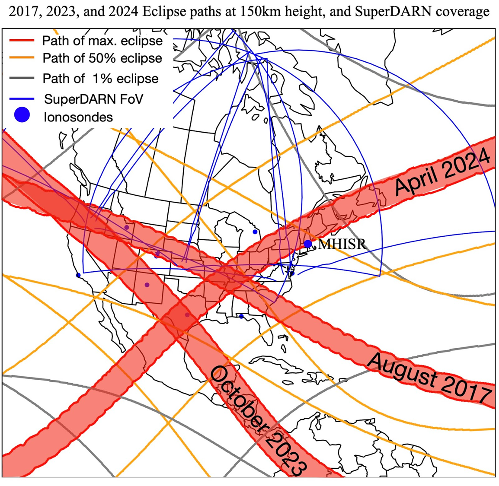
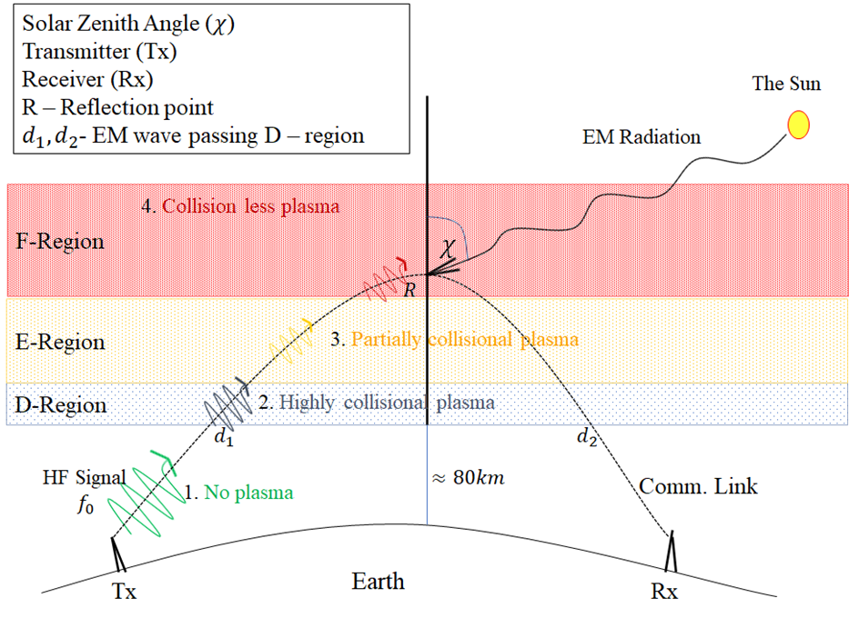
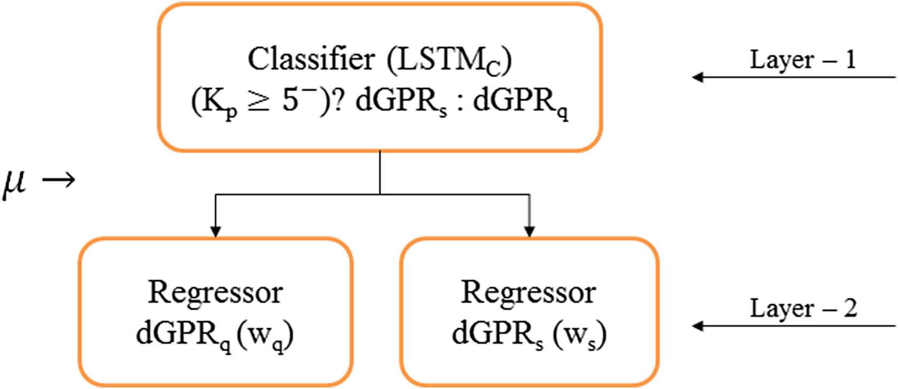
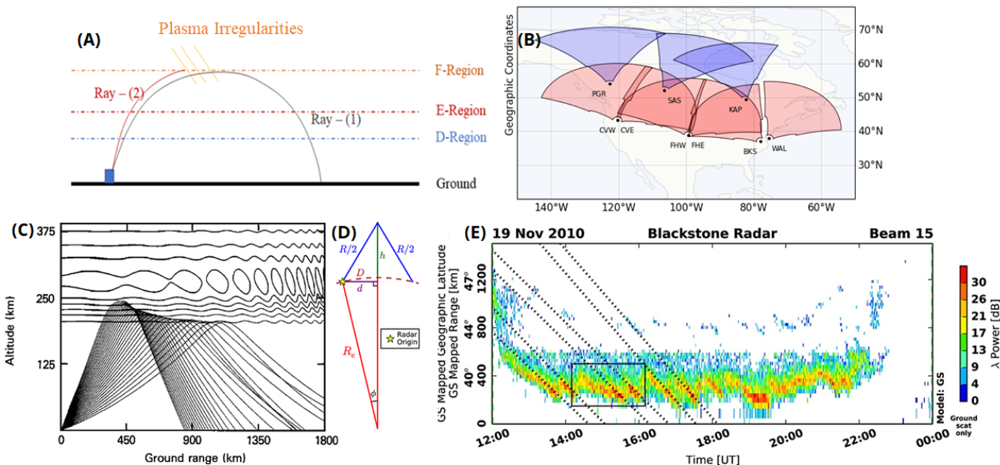

Research Projects
Active research programs, open-source tools, and data analytics initiatives

Solar Eclipse Ionospheric Campaign
Lead PI on NSF award #2412294 (2024–2027). Multi-eclipse comparison of 2017, 2023, and 2024 American eclipses using SuperDARN, GPS TEC, HamSCI citizen science, and WACCM-X simulations.
View Research →
SCUBAS — Submarine Cable Vulnerability Model
Open-source Python model for estimating geomagnetically induced voltages in submarine fiber-optic cables. Uses thin-sheet EM analysis and transmission-line theory. NSF-GEM funded 2024–2027.
GitHub →
Solar Flare Impacts on HF Radio
Characterization of Shortwave Fadeout (SWF), the Doppler Flash precursor, and ionospheric sluggishness using SuperDARN radar networks. 6 first-author publications.
View Research →
Probabilistic Geomagnetic Storm Forecasting
Two-layer neural network architecture for Kp-index prediction with 3-hour lead time. Incorporates solar wind + X-ray flux. Outputs probability distributions with uncertainty bounds.
View Research →
Atmospheric Gravity Waves & TIDs
Co-I on NASA LWS award. Multipoint characterization of TIDs using SuperDARN, GPS, ionosondes. PHaRLAP 3D raytracing to quantify MUF changes. Thunderstorm-ionosphere coupling.
View Research →
Geomagnetic Disturbance Infrastructure Risk
Modeling geomagnetically induced currents in power grids and submarine cables during extreme geomagnetic storms. Risk mapping, operational threshold analysis, real-time tools in development.
View Research →SCUBAS — Submarine Cable Upset By Auroral Streams
Python library for estimating geoelectric fields and induced voltages in submarine fiber-optic cables during geomagnetic disturbances. Implements thin-sheet electromagnetic analysis and cable transmission-line models.
pynasonde
Pynasonde is a Python toolkit for ingesting, analyzing, and visualizing ionosonde data from DIGISONDE DPS4D and VIPIR radar systems — built for Space Weather research and operational ionospheric monitoring.
pynasonde
HF Ray Tracing Toolkit for Ionospheric Studies. TRACE is a Python-first workflow for ionospheric density modeling, PHaRLAP coupling, and both 2D and 3D HF ray-path analysis.
pyDARN — SuperDARN Python Visualization
Co-author and contributor to pyDARN, the official Python visualization library for the SuperDARN HF radar network. Provides range-time plots, fan plots, and convection maps from SuperDARN data files.
SWF Monitoring & Analysis Toolkit
Python toolkit for detecting, characterizing, and modeling shortwave fadeout events from SuperDARN data. Integrates with GOES X-ray observations and the NCAR D-region absorption model for quantitative comparison.
My data science and analytical methodology — probabilistic forecasting, time series analysis, anomaly detection, complex network analysis — are directly applicable across domains. Planned projects include:
- Climate variability analytics: Applying spectral analysis and statistical forecasting tools developed for space weather to seasonal climate variability and extreme event prediction.
- Financial time series: Studying long-range correlations and turbulence analogies in financial market data using methods from plasma physics (structure functions, multi-scale wavelet decomposition).
- Biological complexity: Network-theoretic analysis of complex biological systems — from neural connectivity to ecosystem trophic networks — using graph-based anomaly detection.